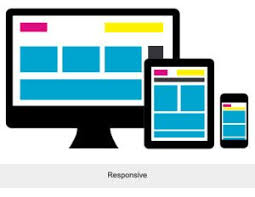
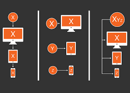

IntroducciónEn las últimas décadas, el crecimiento y expansión de sistemas móviles y tabletas ha impactado en diversas áreas. Tal es el caso de la producción de sitios en Internet que busca métodos de innovación con soluciones efectivas para presentar los contenidos en dispositivos portátiles, considerando su diversificación y sus distintas formas de interacción. Siendo la web un proveedor de información compleja y extensa, la idea de innovar para lo nuevo se ha orientado a la creación del Diseño Web Adaptativo como una solución a la presentación del sitio en cualquier medio portátil. Las posibilidades y beneficios de este método han sido aceptadas y adoptadas por una gran mayoría de desarrolladores de páginas. Trabajar con proporciones en lugar de pixeles, en el posicionamiento de los componentes del sitio, marca un cambio sustantivo para su despliegue en áreas cambiantes o pantallas diversas. |
|
¿Que es el Diseño responsivo?El diseño web responsivo o adaptable, conocido por las siglas RWD (responsive web design), es una filosofía de diseño y desarrollo, cuyo objetivo es adaptar la apariencia de las páginas web al dispositivo que se esté utilizando para visualizarla. Hoy día las páginas web se visualizan en multitud de tipos de dispositivos como tabletas, teléfonos inteligentes, libros electrónicos, portátiles y computadoras personales, entre otros. Además, aún dentro de cada tipo, cada dispositivo tiene sus características concretas: tamaño de pantalla, resolución, potencia de CPU y capacidad de memoria. Esta tecnología pretende que con un solo diseño web, se tenga una visualización adecuada en cualquier dispositivo
|
|
Antecedentesdiseno-responsivo.jpg Como un antecedente del Design Web Responsive, se encuentra la filosofía de Mejora progresiva, establecida por Steven Champeon en 2003. Este planteamiento, promueve la continua supervisión tecnológica de los sitios siguiendo la dinámica de crecimiento de los navegadores. Es decir, se promueve hacer mejoras técnicas cada vez que se presenten actualizaciones en los navegadores, garantizando que el sitio se mantenga técnicamente a la vanguardia. Con esta vigilancia continua, se aprovechan las posibilidades de las hojas de estilo, o Cascading Style Sheets (CSS), y el sitio se mantiene preparado para la implementación de nuevos estándares. En 2009, Ethan Marcone propone Fluid Grids. La propuesta complementa la producción de páginas con sistemas de estructuración para el diseño de sitios mediante la aplicación de una serie de estilos en el archivo CSS, los cuales organizan los contenidos de una página. De esta manera, los estilos establecen un contenedor dividido mediante guías verticales y horizontales en los que se incorporan los elementos de diseño de la página, ofreciendo la posibilidad de que los elementos puedan salir del marco que los contiene, para originar otro tipo de sensaciones en la percepción del usuario. Luke Wroblewski, en 2009, propone Mobile First, concepto basado en el crecimiento exponencial de los sistemas portátiles frente a las computadoras. Recomienda que el diseño se oriente para ser desplegado en esos dispositivos, con el propósito de estar preparados al inminente cambio de equipos grandes a equipos portátiles para la consulta de sitios. Esta serie de reflexiones y propuestas son las que enmarcan el surgimiento, en 2010, del Responsive Web Design de Ethan Marcotte. Quién, basándose a su vez en los principios de Arquitecture Responsive, encuentra en el concepto: intercambio de información continuo y constructivo, la noción de que los espacios y quienes los habitan deben influenciarse mutuamente. Traducido al ámbito de la tecnología; se trata de que el diseño de los contenidos y su espacio de presentación se encuentren intrínsecamente vinculados. |